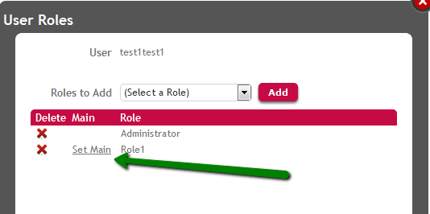

A GeneXus Access Manager user can have many GAM Roles associated and one Main Role. The Main Role of a user is used to take the Security Policy of this role when the user has no security policy associated to him. See GAM Security Policies for more details on this topic. Programmatically, you can set the main role of a user, by the SetMainRoleById method of GAMUser object. &GAMUser.Load(&UserId) &isOK = &GAMUser.SetMainRoleById(&Id, &Errors) //&Errors is collection of GAMError, &Id is GAMKeyNumLong data type The way to get the main role of a user is by the DefaultRoleId property of GAMUser object: &Id = &GAMUser.DefaultRoleId //&Id is GAMKeyNumLong data type In order to set a role as the main role of a user using GAM Web Backoffice click "Set as Main" in the list of roles of the user (as shown in figure 1).  Figure 1.Note: When defining a new permission in the knowledge base (editing the Permission Prefix Property of any object), this permission is assigned to the Main Role of administrator user (see Administrator User). This is in order to facilitate prototyping and it´s another purpose of the main role.
|
| Backlinks | |
| GAM Roles | GAM Security Policies |
| Managing Roles through external authentication programs |